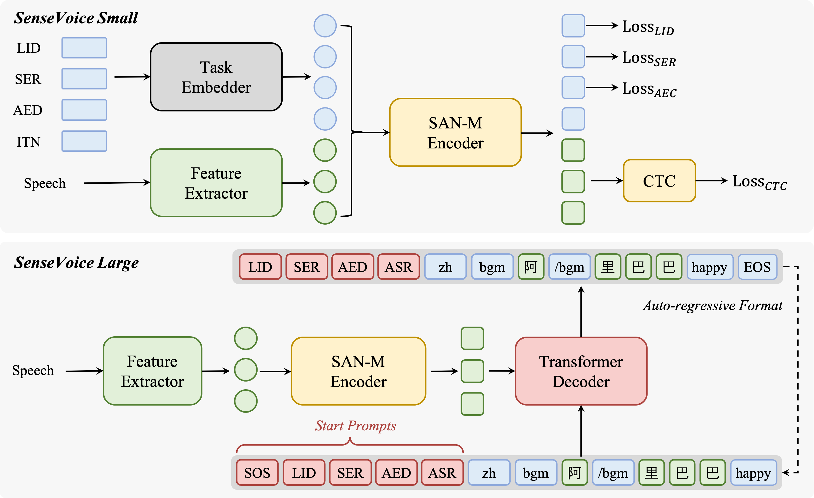

FunAudioLLM: Fundamental Voice Understanding and Generating Models for Natural Interaction Between Humans and LLMs
[Paper] [Code] [HuggingFace] [ModelScope]
FunAudioLLM Team
Tongyi Speech Lab, Alibaba Group
Abstract. We introduce FunAudioLLM, ....
Contents
Overview of CosyVoice

Figure 1. An overview of the CosyVoice Models at the inference stage. In summary, CosyVoice consists of an autoregressive transformer to generate corresponding speech tokens for input text, an ODE-based diffusion model, flow matching, to reconstruct Mel spectram from the generated speech tokens, and a HiFiGAN based vocoder to synthesize waveforms. Dashed modules are optional in specific model usages, such as cross-lingual, SFT inference and so on.
Multi-lingual Voice Generation
| Language | Speaker | Utterance 1 | Utterance 2 |
|---|---|---|---|
| ZH | Female | I don't really care what you call me. I've been a silent spectator, watching species evolve, empires rise and fall. But always remember, I am mighty and enduring. Respect me and I'll nurture you; ignore me and you shall face the consequences. |
顿时，气氛变得沉郁起来。乍看之下，一切的困扰仿佛都围绕在我身边。我皱着眉头，感受着那份压力，但我知道我不能放弃，不能认输。于是，我深吸一口气，心底的声音告诉我：“无论如何，都要冷静下来，重新开始。” |
| Male | I don't really care what you call me. I've been a silent spectator, watching species evolve, empires rise and fall. But always remember, I am mighty and enduring. Respect me and I'll nurture you; ignore me and you shall face the consequences. |
顿时，气氛变得沉郁起来。乍看之下，一切的困扰仿佛都围绕在我身边。我皱着眉头，感受着那份压力，但我知道我不能放弃，不能认输。于是，我深吸一口气，心底的声音告诉我：“无论如何，都要冷静下来，重新开始。” |
|
| EN | Female | I don't really care what you call me. I've been a silent spectator, watching species evolve, empires rise and fall. But always remember, I am mighty and enduring. Respect me and I'll nurture you; ignore me and you shall face the consequences. |
顿时，气氛变得沉郁起来。乍看之下，一切的困扰仿佛都围绕在我身边。我皱着眉头，感受着那份压力，但我知道我不能放弃，不能认输。于是，我深吸一口气，心底的声音告诉我：“无论如何，都要冷静下来，重新开始。” |
| Male | I don't really care what you call me. I've been a silent spectator, watching species evolve, empires rise and fall. But always remember, I am mighty and enduring. Respect me and I'll nurture you; ignore me and you shall face the consequences. |
顿时，气氛变得沉郁起来。乍看之下，一切的困扰仿佛都围绕在我身边。我皱着眉头，感受着那份压力，但我知道我不能放弃，不能认输。于是，我深吸一口气，心底的声音告诉我：“无论如何，都要冷静下来，重新开始。” |
|
| JP | Female | I don't really care what you call me. I've been a silent spectator, watching species evolve, empires rise and fall. But always remember, I am mighty and enduring. Respect me and I'll nurture you; ignore me and you shall face the consequences. |
顿时，气氛变得沉郁起来。乍看之下，一切的困扰仿佛都围绕在我身边。我皱着眉头，感受着那份压力，但我知道我不能放弃，不能认输。于是，我深吸一口气，心底的声音告诉我：“无论如何，都要冷静下来，重新开始。” |
| Male | I don't really care what you call me. I've been a silent spectator, watching species evolve, empires rise and fall. But always remember, I am mighty and enduring. Respect me and I'll nurture you; ignore me and you shall face the consequences. |
顿时，气氛变得沉郁起来。乍看之下，一切的困扰仿佛都围绕在我身边。我皱着眉头，感受着那份压力，但我知道我不能放弃，不能认输。于是，我深吸一口气，心底的声音告诉我：“无论如何，都要冷静下来，重新开始。” |
|
| Yue | Female | I don't really care what you call me. I've been a silent spectator, watching species evolve, empires rise and fall. But always remember, I am mighty and enduring. Respect me and I'll nurture you; ignore me and you shall face the consequences. |
顿时，气氛变得沉郁起来。乍看之下，一切的困扰仿佛都围绕在我身边。我皱着眉头，感受着那份压力，但我知道我不能放弃，不能认输。于是，我深吸一口气，心底的声音告诉我：“无论如何，都要冷静下来，重新开始。” |
| Male | I don't really care what you call me. I've been a silent spectator, watching species evolve, empires rise and fall. But always remember, I am mighty and enduring. Respect me and I'll nurture you; ignore me and you shall face the consequences. |
顿时，气氛变得沉郁起来。乍看之下，一切的困扰仿佛都围绕在我身边。我皱着眉头，感受着那份压力，但我知道我不能放弃，不能认输。于是，我深吸一口气，心底的声音告诉我：“无论如何，都要冷静下来，重新开始。” |
|
| KO | Female | I don't really care what you call me. I've been a silent spectator, watching species evolve, empires rise and fall. But always remember, I am mighty and enduring. Respect me and I'll nurture you; ignore me and you shall face the consequences. |
顿时，气氛变得沉郁起来。乍看之下，一切的困扰仿佛都围绕在我身边。我皱着眉头，感受着那份压力，但我知道我不能放弃，不能认输。于是，我深吸一口气，心底的声音告诉我：“无论如何，都要冷静下来，重新开始。” |
| Male | I don't really care what you call me. I've been a silent spectator, watching species evolve, empires rise and fall. But always remember, I am mighty and enduring. Respect me and I'll nurture you; ignore me and you shall face the consequences. |
顿时，气氛变得沉郁起来。乍看之下，一切的困扰仿佛都围绕在我身边。我皱着眉头，感受着那份压力，但我知道我不能放弃，不能认输。于是，我深吸一口气，心底的声音告诉我：“无论如何，都要冷静下来，重新开始。” |
Instructed Voice Generation
Speaker Identity Control
| Instruction | Generated |
|---|---|
| Theo 'Crimson', is a fiery, passionate rebel leader. Fights with fervor for justice, but struggles with impulsiveness. (翻译：西奥（Theo）‘绯红’，是一位火热、充满激情的反叛领袖。他为正义而战，斗志高昂，但容易冲动。) |
人总是要为自己所做的事情付出代价的，我不怕付出代价，只是不愿意让无辜的人来陪葬。 |
| Kai 'Torrent', is a cool-headed, tactical water mage who plans his moves carefully. A soothing presence with hidden depths. (翻译：凯（Kai）‘激流’，是一位冷静、讲究策略的水法师，仔细规划每一步行动。他是一个具有安抚作用的存在，内心深藏深度。) |
一个人最大的悲哀，不是牺牲，而是看着自己辛辛苦苦得来的一切，最后变成了别人的功劳。 |
| Zara 'Wildfire', is an impulsive, fearless firebrand who loves a challenge. Her bravery inspires others, though she often acts recklessly. (翻译：扎拉（Wildfire）‘狂野之火’，是一个冲动而无畏的煽动者，她热爱挑战。她的勇敢鼓舞了他人，尽管她的行为常常是鲁莽的。) |
真正的速度你是看不见的，就像风起云涌、日落月升，就像你不知道树叶什么时候变黄，不知道你的孩子什么时候长出第一颗牙来。 |
| Selene 'Moonshade', is a mysterious, elegant dancer with a connection to the night. Her movements are both mesmerizing and deadly. (翻译：赛琳娜（Selene）‘月影’，是一位神秘、优雅的舞者，与夜晚有着特殊的联系。她的舞姿既令人着迷又致命。) |
我们走的每一步，都是我们策略的一部分；你看到的所有一切，包括我此刻与你交谈，所做的一切，所说的每一句话，都有深远的含义。 |
| Priya, the humanitarian doctor, heals wounds of the world with her boundless empathy and skill. (翻译：普莉娅（Priya），这位人道主义医生，用她无尽的同情心和高超的医术治愈着世界的创伤。) |
You don't know about real loss, because it only occurs when you've loved something more than you love yourself. |
| Ivan, the old sea captain, navigates life's storms with timeless wisdom and a heart of gold. (翻译：伊凡（Ivan），这位老船长，用永恒的智慧和一颗善良的心驾驭人生的风暴。) |
Hope is a good thing, maybe the best of things, and no good thing ever dies. |
Fine-grained Control
| Text | Generated |
|---|---|
| [laughter]有时候，最简单的事情[laughter]能让我们笑得最开心，就像是无意中听到的一个傻笑话[laughter]。 | |
| 他搞的一个恶作剧，让大家<laughter>忍俊不禁</laughter>。 | |
| 成功并不是预先设定的终点，它需要你一步一步地<strong>努力</strong>，持续地<strong>努力</strong>，最终将梦想变成现实。 | |
| 当你深入了解一个文化[breath]，你会开始欣赏那些最初看似平凡无奇的细节[breath]，并且通过这些细节，逐渐理解这个文化的精神。 | |
| Well that's kind of scary [laughter] I'm not near that age [laughter] I'm way over it but I do have children to think about you know. | |
| Well that pretty much covers <laughter>the subject</laughter> well thanks for calling me. | |
| The team's <strong>unity</strong> and <strong>resilience</strong> helped them win the championship. | |
| I don't think I over eat yeah [breath] and um I do exercise regularly. |
Style Control
| Instruction | Generated |
|---|---|
| A female speaker with normal pitch and normal speaking rate. | 他讲的冷笑话虽然老套，但仍然让大家笑个不停。 |
| A female speaker with high pitch, normal speaking rate, and happy emotion. | 他讲的冷笑话虽然老套，但仍然让大家笑个不停。 |
| A male speaker with low pitch, fast speaking rate, and angry emotion. | 生活的美不在于宏大的时刻，而在于那些我们经常忽视的简单而日常的奇迹。 |
| A female speaker with normal pitch, slow speaking rate, and sad emotion. | 当我们离开这个世界时，人们记住的不是我们积累的财物，而是我们对他们生活的影响和我们共享的爱。 |
| A male speaker with low pitch, slow speaking rate, and fearful emotion. | 深夜独行于荒芜的小巷，忽闻身后传来诡异的脚步声，我寒毛直竖，心跳如雷，无法抑制对未知危险的深深恐惧。 |
| A male speaker with low pitch, slow speaking rate, and sad emotion. | Every choice we make, every path we take, molds our identity. We are the sum of our choices, and it's up to us to make them meaningful. |
| A female speaker with angry emotion. | I’m really struggling to stay calm right now because what you did was totally out of line! |
Zero-shot In-context Generation
| Language | Prompt | Generated 1 | Generated 2 |
|---|---|---|---|
| ZH | 希望你以后能够做的比我还好呦。 |
收到好友从远方寄来的生日礼物，那份意外的惊喜与深深的祝福让我心中充满了甜蜜的快乐，笑容如花儿般绽放。 |
漫步在金秋的枫林中，阳光透过斑斓的叶片洒在身上，清风拂面，我陶醉在这宁静而美好的时光里，快乐得几乎要翩翩起舞。 |
多少年了，还没有人敢这样对我拍桌子瞪眼睛。 |
目睹不法分子公然破坏公共设施，无视社会规则，我怒不可遏，心中充满了对这种恶劣行径的强烈谴责与愤慨。 |
得知商家以次充好，欺诈消费者，我怒火中烧，对于这种丧失诚信、侵害消费者权益的行为感到极度愤恨，誓要讨回公道。 |
|
我的故事，过程很美，而结局却满是悲伤。 |
望着空荡荡的房间，昔日共度的美好时光历历在目，如今却物是人非，泪水止不住地滑落，心如刀割。 |
得知挚爱的宠物因病离世，我沉浸在无尽的哀伤中，那熟悉的身影、温顺的眼神仿佛还在眼前，令人心碎不已。 |
|
我无法忍受他这种粗枝大叶的作风。 |
看到餐盘中蠕动的蛆虫，我胃中翻江倒海，那种恶心的感觉瞬间席卷全身，对这种肮脏景象的厌恶之情无以言表。 |
闻到邻居家中飘出的刺鼻烟味，我眉头紧皱，喉咙发痒，对这种严重干扰他人生活的不良习惯感到极度厌恶。 |
|
| EN | I think people online have actually assembled videos showing every launch and it just gets like crazy fast as you get to twenty twenty three. So yeah, so we've done a nineteen three flight. We're now qualifying Falcon nie to be able to do forty flights. |
In the quest for sustainable energy, Tesla leads the charge; every electric vehicle on the road is an emissary saluting clearer skies, collectively weaving the tapestry of our planet's verdant future. |
From space exploration to subterranean tunnels, from AI to the neurotechnology revolution, my pursuit transcends mere technological frontiers; it's about carving out unprecedented realms of existence and progress for mankind. |
I'm so happy I got to do this. I really wanted to work with Tom Hooper. I know that he records live and he films and records your vocals live. It's such an interesting thing to me and I wanted to see him work. I had actually done screen tests for Les Mis. |
Every stage is a fresh adventure, and as the lights ignite, it's an unspoken pact between me and the audience, weaving unforgettable nights where dreams meet reality. |
Creating is my way of extracting magic from life's moments. Whether it's joy or tears, I embrace it all, transmuting those feelings into notes, with the hope of touching the depths of every soul. |
|
| JP | の匂いを嗅ぎつけて現場に赴き、モテる感覚の全てを使って犯人を割り出し、食らいついたら相手が観念するまで証拠という鋭い歯を食い込ませるそれが探偵さん。 |
投資で安定収入を得たい人達で情報交換をしませんか？ |
自分でもユナに提案してからやっぱり暑すぎるか。 |
どうして、どうしてお姉ちゃんを助けてくれなかったの？ |
クレジットカード現金化の店舗のスタッフブログです。 |
某ハンドメイドブログの別館ともなっております。 |
|
| Yue | 结果学校苦心安排佢哋自行排成三队，走到行列最前端。 |
不可能吧我挂住你啦点算啊，你又唔接我电话。 |
老公，今晚石河子好似有六级地震。 |
你系男嘅定系女嘅，你叫咩名，边度嚟噶？ |
衞生署提醒市民，近期流感病例增加，建議出門佩戴口罩，留意個人衛生。 |
呢度嘅风景真係靓到爆，连带咁多年嚟我见过嘅都比唔上。 |
|
| KO | 물고기들은 빗물이 물 위로 떨어지는 소리에 놀라 달아나 버리지. 그래서 비가 그친 후엔 낚시하기 딱 좋아. |
여기에 가만히 서 있는다고 상대가 찾아오진 않아. |
기억해둬, 친구, 난 언젠가 이 세상을 정복할 사람이야! |
고작 빗방울로 호들갑은, 아직 번개도 치지 않았는데. |
하늘이 맑다고 번개는 숨길 수 없고, 비가 내리지 않아도 신의 번개를 내릴 수 있다. |
비록 몸과 꿈은 사라졌어도, 그녀는 결국 신성한 벚나무가 되었다. |
Speaker Fine-tune
| Speaker | Text | Generated |
|---|---|---|
| Speaker 1 | 这也不知道为啥哈，反正，它刚出来的时候儿叫台湾手抓饼，现在就是可能这个，大陆这边儿都给改良了，整的都像那种，烙的那种，鸡蛋灌饼儿似的啦，哎呦，就有那种感觉哈。 | |
| Speaker 2 | 明月几时有？把酒问青天。不知天上宫阙，今夕是何年。我欲乘风归去，又恐琼楼玉宇，高处不胜寒。起舞弄清影，何似在人间。 | |
| Speaker 3 | 生活不在于拥有最好的一切，而在于把一切都变得最好。别怕失败，它是通往成功的必经之路。每一次跌倒，都是为了更坚强地站起。梦想不是等来的，是追出来的。迈出那一步，让汗水成为你成功的见证！ | |
| Speaker 4 | In the heart of the whispering woods, Ellie the adventurous elf put on her leafy green cloak, picking up her map sprinkled with mystical runes and set out on a quest to find the enchanted crystal that was said to hold the key to endless joy and laughter. | |
| Speaker 5 | In the stately grandeur of Pemberley, Elizabeth Bennet's prejudices began to crumble as she gazed upon the portrait of Mr. Darcy, realizing for the first time that the true measure of a man lay not in the fineries of his estate, but in the depth of his character and the kindness he bestowed upon those of lower station. |
* Due to copyright restrictions, we are unable to open source the SFT models, but we will release the SFT training script. You can use this script to perform SFT on your own data.
Overview of SenseVoice

Figure 2. An overview of the SenseVoice voice understanding model.
Multilingaul Speech Recognition
Figure 3. Comparasion of SenseVoice and Whisper on multilingual speech recognition beachmarks.
Speech Emotion Recognition

Figure 4. Comparasion of SenseVoice and Whisper on multilingual speech recognition beachmarks.
Demo Samples
| Speech | Whisper-Large-V3 | SenseVoice-Large | SenseVoice-Small |
|---|---|---|---|
English-Chinese-Tengger-Paradise |
Tangri with his song, Heaven. Heaven. so Yeah! Absolute shock, but in a great way. Wow. That was awesome. That was awesome. What way to open a song. That was awesome. Awesome. I'd love to check out some more Mongolian throat singing stuff. That is correct, right? It is Mongolian. Let me know, I'd love to check out more. I think a lot of you want me to check out The Who. If you guys still want me to, I'd be more than happy to. so晚安的天空清的湖水啊滴滴的草原 That is incredible. That is incredible. For those of you who don't know what I'm saying right now, the way he can make it sound like he's finished a note, you know, he like lowers it so low you can't even hear the note anymore. And then he brings it back and you can see his mouth still open. The way he can like finish a note but not finish it i don't know how to explain that that is an incredible talent that is amazing Hey | Tangree with his song, Heaven. 🎼 啊。🎵 Absolutely shocked but in a great way. That was awesome, 🎶 that was awesome 😊 what way to open a song, that was awesome, awesome, I'd love to check out some more Mongolian throat singing stuff, that is correct right, it is Mongolian. Let me know I'd love to check out more I think a lot of you want to check out the Who if you guys still want me to I'd be more than happy to. 🎼 蓝蓝的天空，清清的湖水啊，绿绿的草原。That is incredible that is incredible for those of you who don't know what I'm saying right now the way he can make it sound like he's finished a note you know he like lowers it so low you can't even hear the note anymore and then he brings it back and you can see his mouth still open the way it makes the way he can like finish a note but not finish it . 😡 I don't know how to explain that that is an incredible talent that is amazing. 😊 这是我的家， 哎。😊👏 | Tangry with his song, heaven. 🎼 Absolute shocked but in a great way my. 😊That was awesome, that was awesome what way to open a song that was awesome, awesome, 😡 I'd love to check out some more Moolian fruiting and stuff that is correct right it is Monolian let me know I'd love to check out more I think a lot of you want me to check out the who if you guys still want me to I'd be more than happy to. 🎼 蓝蓝的天空。清清的湖水呀，绿绿的草原。😔 That is incredible, that is incredible that is incredible for those of you who don't know what I'm saying right now, the way he can make it sound like he's finished a note, you know, he like lowers it's so low you you can't even. Hear the note anymore and then he brings it back and you can see his mouth still open the way it makes the way he can like finish a note but not finish it, I don't know how to explain that that is an incredible talent that is amazing. 😡 🎼 这是我的家哎。 |
*Note: Audio examples are segmented into 15-second chunks without using Voice Activity Detection (VAD) and then processed by the ASR model. The ASR results are concatenated, and special tokens are removed. No language prompt is added during decoding. For emotional context, 😊 denotes HAPPY, 😡 denotes ANGRY, and 😔 denotes SAD.
Speech-to-Speech Translation
By integrating LLMs and CosyVoice, we can easily perform speech-to-speech translation (S2ST). Note that the original recordings are bolded.
| ZH | EN | JP | Yue | KO |
|---|---|---|---|---|
<|zh|>对，所以说你现在的话，这个账单的话，你既然说能处理，那你就想办法处理掉。 |
<|en|>Yes, that's why I'm saying, regarding the bill you're currently discussing, if you say you can handle it, then find a way to take care of it. |
<|jp|>そう、だから今あなたが言っていること、この請求書について、あなたが処理できると言ったのなら、何とかして処理してください。 |
<|yue|>对，所以话你而家讲嘅，呢张账单嘅话，你既然话得掂，噉你就要想办法搞掂佢。 |
<|ko|>맞아, 그래서 네가 지금 말하는 것, 이 계산서에 대해서, 네가 처리할 수 있다고 했다면, 그렇다면 방법을 찾아서 처리해야 해. |
<|zh|>在那之后，完全收购那家公司。因此，保持管理层的一致性，利益与即将加入家族的资产保持一致，这就是我们有时不买下全部的原因。 |
<|en|>And then later on, fully acquiring that company. So keeping management in line, interest in line with the asset that's coming into the family is a reason why sometimes we don't buy the whole thing. |
<|jp|>その後、その会社を完全に買収する。だから、経営陣を一列に並べ、家族に入る資産との利益を一致させることが、私たちが全てを買わない理由の一つです。 |
<|yue|>之后，就完全收购咗嗰间公司。所以，保持管理层同兴趣与即将加入家族嘅资产保持一致，系我们有时唔买晒全部嘅原因。 |
<|ko|>그리고 나중에, 그 회사를 완전히 인수하게 됩니다. 그래서 경영진을 일치시키고, 가족에 들어오는 자산과의 이익을 일치시키는 것이 우리가 가끔 전부를 사지 않는 이유입니다. |
<|zh|>只是雨滴有什么麻烦的？这还没有打雷呢！ |
<|en|>Rainfall alone does not constitute a storm. Thunder is required. |
<|jp|>雨なんて大したことありません。まだ雷も鳴っていないのですから。 |
<|yue|>只系雨滴有咩麻烦嘅？连打雷都未有呢！ |
<|ko|>고작 빗방울로 호들갑은, 아직 번개도 치지 않았는데. |
<|zh|>早点回家吧，到家了如果可以的话给我回个信息。 |
<|en|>Come home early, and if possible, let me know when you're back. |
<|jp|>早く家に帰って、家に着いたら可能なら私にメッセージを返してください。 |
<|yue|>早啲翻屋企吧，到屋企可以嘅话俾我回个信息。 |
<|ko|>일찍 집에 돌아오세요. 집에 도착하면 가능하다면 저에게 연락해 주세요. |
虽然这种时候已经错过了云先生的戏，但夜晚的璃月仍有许多好去处。 |
<|en|>By this time of night, we will have already missed Yun's play. But LeeYew is full of interesting places to explore, even at night. |
<|jp|>もう雲殿の芝居に間に合わないが、夜の璃月はまだまだいいところがたくさんあるぞ。 |
<|yue|>虽然呢个时候已经错过咗云先生嘅戏，但夜晚嘅璃月仲有好多好去处。 |
<|ko|>운 선생의 경극을 놓쳤지만, 밤의 리월에는 가볼 만한 곳이 많아. |
Audio Book
| Text | Audio |
|---|---|
| 神雕侠侣，第九回，百计避敌。 陆无双正自惶急，听他忽问傻话，怒道：“傻蛋！又胡说甚么？” 杨过笑道：“咱们来玩拜天地成亲，你扮新娘子好不好？那才叫美呢！脸上披了红布，别人说什么也瞧你不见。” 陆无双一怔，道：“你教我扮新娘子躲过师父？” 杨过嘻嘻笑道：“我不知道，你扮新娘子，我就扮新官人。” |
*Note: This demo uses internal SFT models.
Versatile Voice Chat
By integrating SenseVoice, LLMs and CosyVoice, we can build a versatile VoiceChat application.
| User | Assistant |
|---|---|
顿时，气氛变得沉郁起来。乍看之下，一切的困扰仿佛都围绕在我身边。我皱着眉头，感受着那份压力，但我知道我不能放弃，不能认输。于是，我深吸一口气，心底的声音告诉我：“无论如何，都要冷静下来，重新开始。” |
I don't really care what you call me. I've been a silent spectator, watching species evolve, empires rise and fall. But always remember, I am mighty and enduring. Respect me and I'll nurture you; ignore me and you shall face the consequences. |
Disclaimer
The content provided above is for academic purposes only and is intended to demonstrate technical capabilities. Some examples are sourced from the internet. If any content infringes on your rights, please contact us to request its removal.